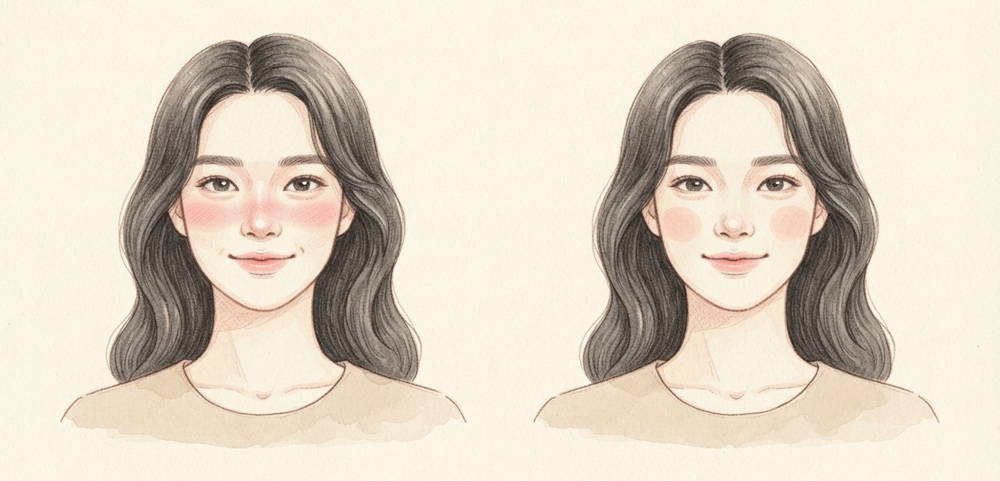
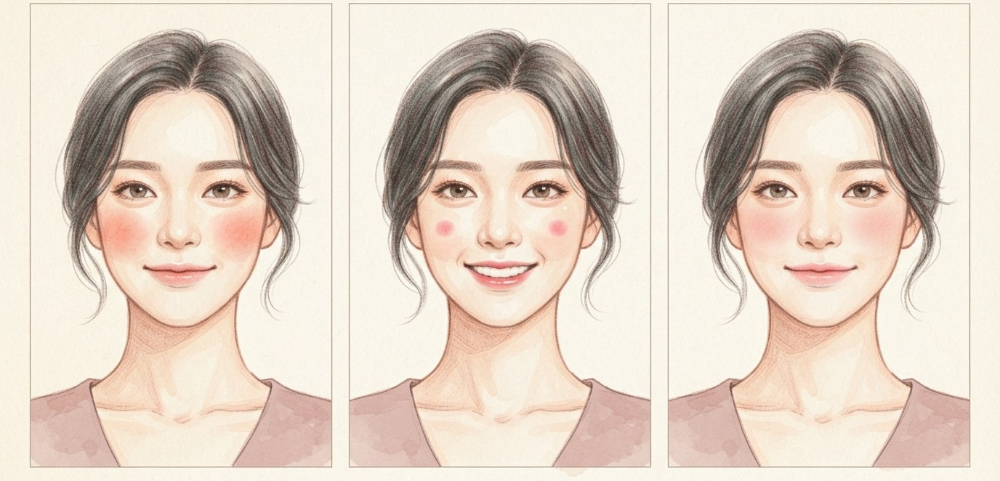
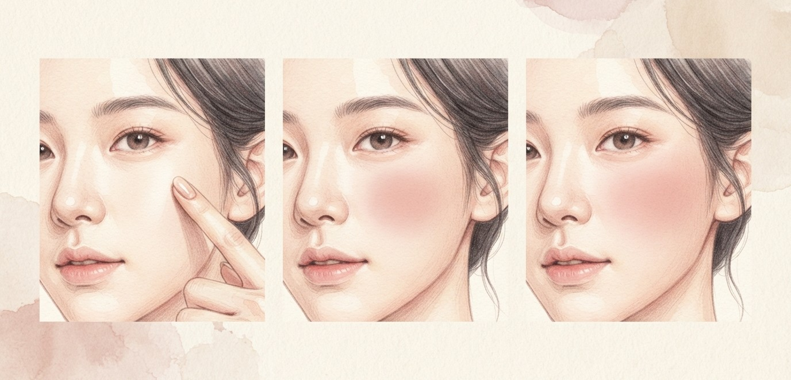

콧등까지 채우던 블러셔가 내려왔어요.
힘 뺀 생기, 이렇게 바르세요.

중안부를 짧아 보이게 하려고 눈밑부터 콧등까지 넓게 쓸던 블러셔. 요즘은 볼 중앙이나 살짝 아래에 스며들듯 얹어요.

맑은 토마토빛 · 수채화처럼 볼 중앙과 아래쪽을 자연스럽게 연결해요.
톡톡 키치하게 · 볼 중앙 아래에 넓지 않게, 뭉치듯 얹어요.
은은한 로맨틱 · 볼 중앙부터 부드럽게 이어 시선이 볼에 머물게 해요.

볼에서 가장 통통한 중앙을 찾아요.
과하게 붉지 않은 소프트한 컬러를 톡톡 얹어요.
경계 없이 살짝 아래로 스며들듯 풀어요. 눈밑·콧등은 비워 두세요.
콧등까지 채우던 블러셔를 볼 중앙으로만 옮겨 보세요.
같은 블러셔로도 얼굴이 한결 홀가분해져요.
저장해두고 쇼핑할 때 꺼내보세요